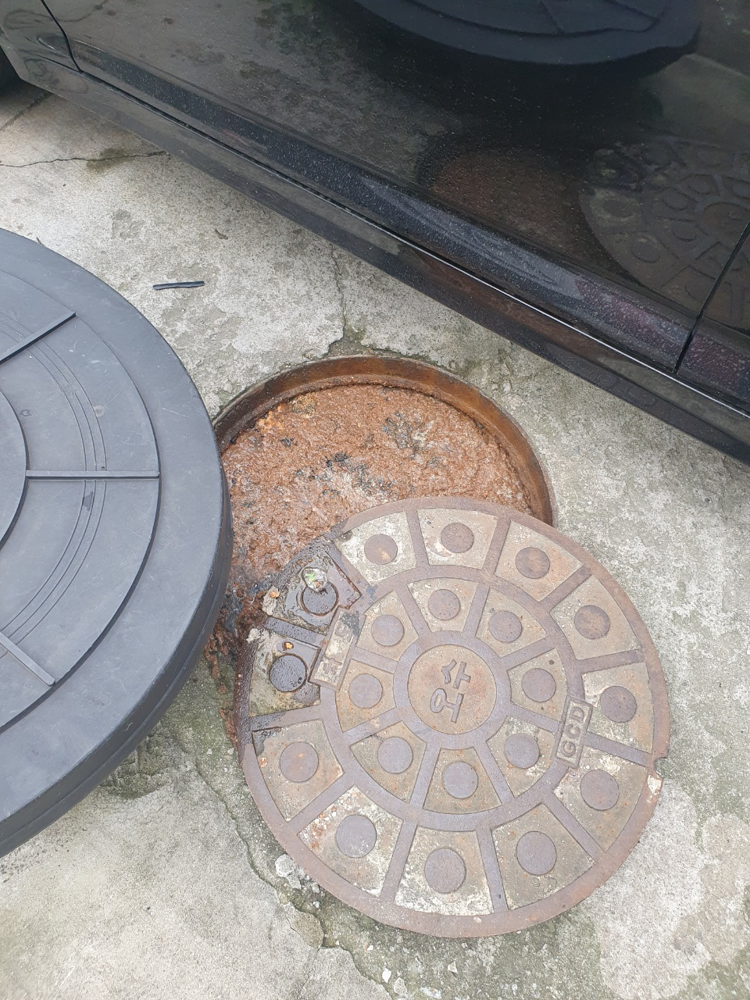
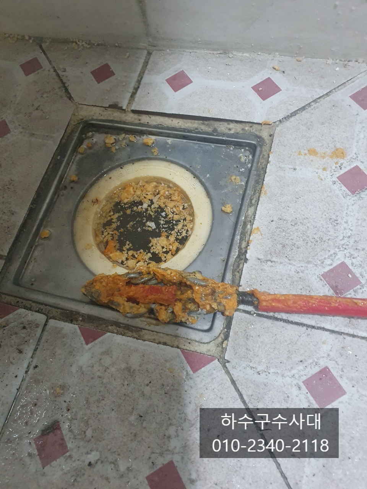
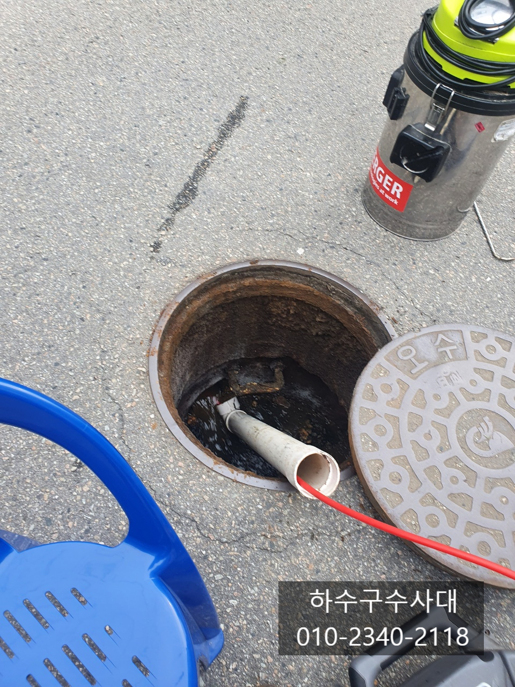
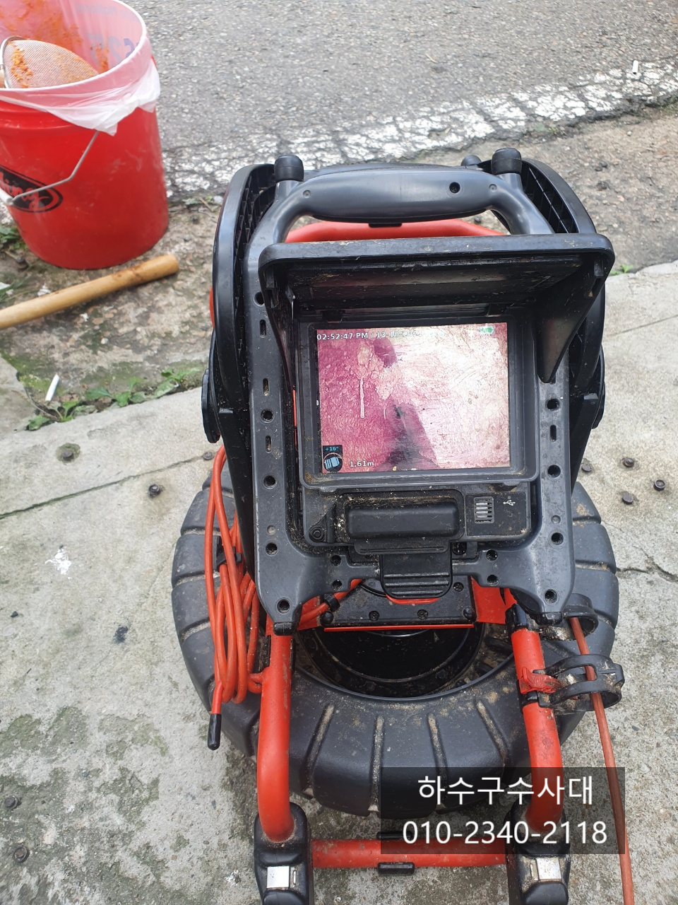
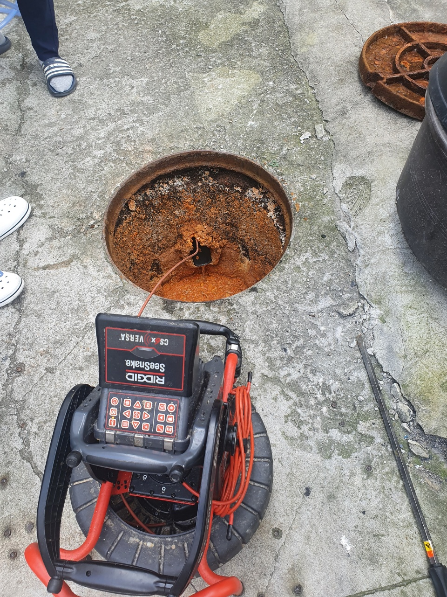
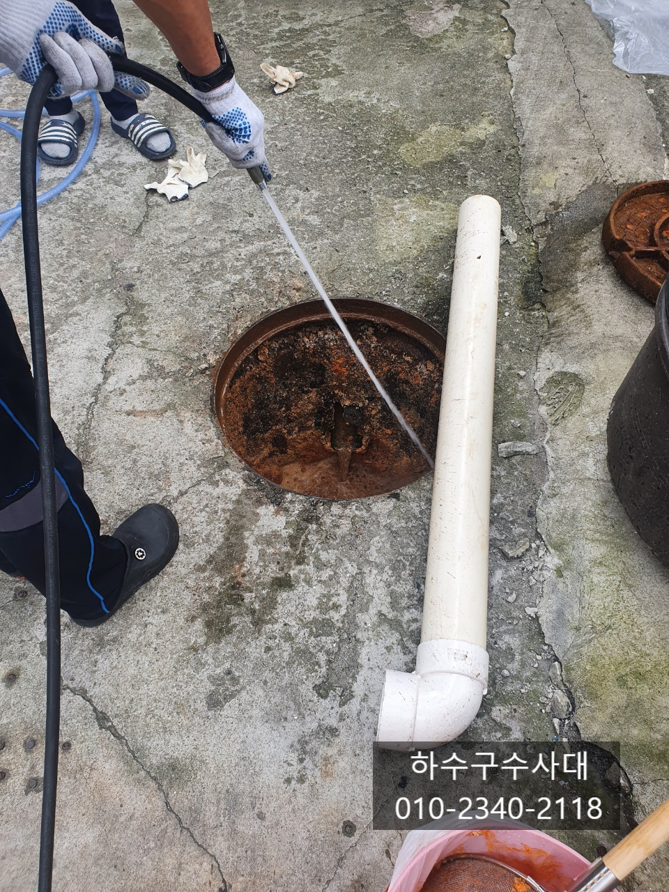

🏠 원삼 싱크대배수관막힘 이동읍 하수구역류 배관설비
용인 싱크대막힘 전문 시공 후기

📋 작업 개요
- 위치: 용인
- 서비스 유형: 싱크대막힘, 변기막힘, 하수구막힘, 배관막힘, 맨홀막힘, 역류해결, 뚫는업체, 배관청소, 고압세척
- 작업 일시: 2023. 12. 25. 22:40
- 업체명: 하수구수사대 (010-5615-2118)
🔍 문제 상황
맨홀 하수구 역류 화장실역류 하수구고압세척
안녕하세요^^
오늘은 상가주택전체가 문제가 된
메인 하수구고압세척한 현장을 소개하겠습니다.
연락을 받고 간곳은 주택관리업체인데요
관리하는 상가주택 화장실막힘으로 불러주셨습니다.
처음에는 단순 화장실막힘 인줄알고 화장실에서
작업을 진행했었는데요. 사진에 보이는것처럼
화장실바닥 하수구에 물이 차있었고 기름기가 둥둥 떠 있는것이
보입니다. 또한 변기물도 내려가지 않는 상태였습니다.
만약 화장실하수구와 변기가 엮여있다면
변기물을 내렸을때 하수구에서 물이 올라와야 하지만
그렇지 않았기에 최종적으로 나가는 맨홀에서
문제가 있다고 판단을 한것이죠.
역시 맨홀을 열어보니 물이 가득 차있는것을
확인하였고 물위에 기름덩어리가 둥둥 떠있습니다.
1층은 상가건물로 소해장국집도 있고 곱창집도 있어서
기름이 배관에 많이 있을것으로 예상되어 집니다.
우선 맨홀에 가득차 있는물을 빼야 하수구가 보일테지만
하수구수사대는 다른 방법을 선택하였습니다^^
막힌 반대쪽에서 뚫는거죠 다행히 나가는 시관쪽맨홀이
멀지않아 가능한 작업이였습니다.

🔎 원인 분석
💡 전문가 진단: 하수구수사대010-2340-2118
막힌것을 뚫리니 물이 시원하게 나오지만
관의 크기에 비해 그리 시원하지많은 않습니다.
아마도 나오는 배관에도 기름덩어리가 많을것으로
판단되어 집니다.
이현장은 6개월동안 4번의 간단한 스프링 작업만
하셨는데 이번에는 확실하게 해결하고 싶으셔서
저희 하수구수사대에 연락을 주셨습니다.
맨홀의 물이 빠지고 나니 건물에서 나오는 배관은 보이지만
최종적으로 나가는 배관은 기름에 덮혀 전혀 보이지가
않습니다. 우선 건물에서 나오는 배관에 내시경카메라로
검수를 하기로 하였습니다.
입구부터 뒤쪽까지 기름터널로 어마어마하게
쌓여있는것이 오늘 제대로 임자를 만났습니다
이 건물의 메인관은 125mm입니다.보통은 100mm배관을
주로 쓰지만 이 건물은 조금 큰걸 사용했어요.
그러다 보니 기름도 많이 붙어 있습니다.
이런경우 일반장비로는 근본적인 해결이 어렵기때문에
고압세척을 진행하기로 하였습니다.
고압세척은 배관을 처음처럼 깨끗하게 복원작업을
한다고 보시면 되는데 이렇게 해야 오래쓰고 관리도
할수 있답니다.
메인 배관을 세척하면서 화장실쪽까지 세척을 진행하기로
하였고 건물의 공용부분을 모두 세척하는 작업을 진행하였어요.

🔧 작업 과정
고압으로 배관에 붙어있던 기름덩어리를 시원하게 빼내고
있는데 정말 덩어리가 엄청나오는게 속이 다 시원합니다^^
보통 메인하수구 배관의 경후 문제가 없는
건물도 있겠지만 아무래도 메인배관은 길고
건물전체가 사용하다보니 관리되기가 쉽지 않아요.
보통은 건물주인분들께서 메인배관은 관리를
하시는게 맞지만 이게 쉽지많은 않은게
겉으로는 아무문제가 없지만 언제,어떻게 일이
터질지 모르기 때문에 특히 문제가 있던 건물은 주기적으로
관리를 받으시는게 좋아요^^
보통은 메인하수구가 막히면 낮은층에서 역류를 하여
피해를 보게되는데요 예를 들면 필로티구조의 주택이나
원룸에서 메인배관이 막히면 1층은 주차장이므로
2층이 제일 낮은층이 되기때문에 2층 화장실이나 싱크대에서
물이 역류할수가 있습니다.
메인배관 즉 공동배관이 막히게 되면 증상이
우리집에 물을 쓰지않았는데 우리집으로 역류하는
증상이 있다면 공동배관에 문제가 있다고 판단을 하시면 됩니다.
다행히 이건물은 화장실막힘 빼고는 피해본 세대가 없었어요^^
배관도 크고 기름덩어리도 많기 때문에
반복작업이 이루어 집니다.
건물 메인배관이 문제가 생기면 제대로 뚫고
배관구조를 파악한수 관리를 해주는것이 좋습니다.
메인배관이 막히게되면 스트레스도 스트레스이지만
어느집에서 피해를 볼 수도 있기때문에
완벽한 해결을 추천드립니다.
왼쪽화면은 맨홀에서 시관으로 나가는 배관이고
오른쪽사진은 건물쪽에서 나오는 배관입니다.
시관으로 나가는 배관은 전체적으로 구배가 좋지않아
물이 1/3정도 고여있고 건물에서 나오는
배관의 구배는 정상적인 편입니다.
오랜기간동안 배관청소를 하지않아 기름이
꾸역꾸역 쌓여있었습니다.
건물 공동화장실과 메인배관을 고압세척으로
청소를 모두 마쳤습니다.
고객님께서 화장실하수구가 빈번하게 막혀


✅ 작업 완료
여러업체가 와서 해결을 했지만 얼마가지않아 또막혀
답답하기만 하셨다고 하시면서 오늘은 배관상태도
파악하고 완벽하게 해결을 하셔서 향후 몇년?간은
하수구걱정은 없겠다고 하셨습니다^^
저희 하수구수사대는 변기막힘부터 고압세척까지
하수구전문업체 입니다.
준비되어 있으니 언제든지 상담전화주세요^^
하수구수사대
010-2340-2118




⚠️ 주방 싱크대 배관 막힘 예방 수칙
- ✅ 기름기가 묻은 식기나 프라이팬은 설거지 전 키친타올로 반드시 기름때를 닦아내세요.
- ✅ 주기적으로 싱크대 개수대에 뜨거운 물을 가득 받아 한 번에 내려 배관 내부 기름을 씻어내세요.
- ✅ 배수구 거름망을 미세한 필터로 사용하시고 음식물 찌꺼기가 틈으로 새어 들지 않게 관리하세요.
- ✅ 베이킹소다와 식초를 뜨거운 물과 함께 일주일에 한 번씩 부어주면 배관 살균과 막힘 예방에 좋습니다.
💡 핵심 정리
- 확실한 장비 작업(내시경 점검 및 샤프트 스케일링)으로 원인을 뿌리 뽑습니다.
- 작업 후 1년 이내에 동일한 부위 재발 시 100% 무상 A/S 서비스를 보장합니다.
- 서울 · 경기 · 인천 전 지역에 24시간 언제든 긴급 출동할 수 있도록 항시 대기 중입니다.
❓ 자주 묻는 질문 (FAQ)
🚨 용인 싱크대막힘 문제로 고민이신가요?
정확한 원인 진단과 확실한 시공으로 재발 없는 해결을 약속드립니다.
24시간 긴급 출동 | 서울 · 경기 · 인천 전지역 | 1년 내 재발 시 무상 A/S